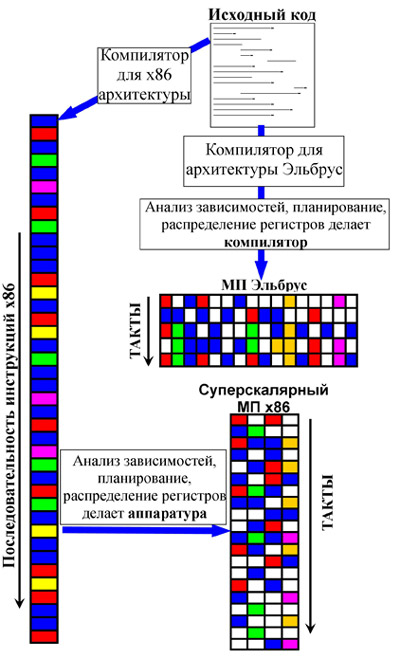
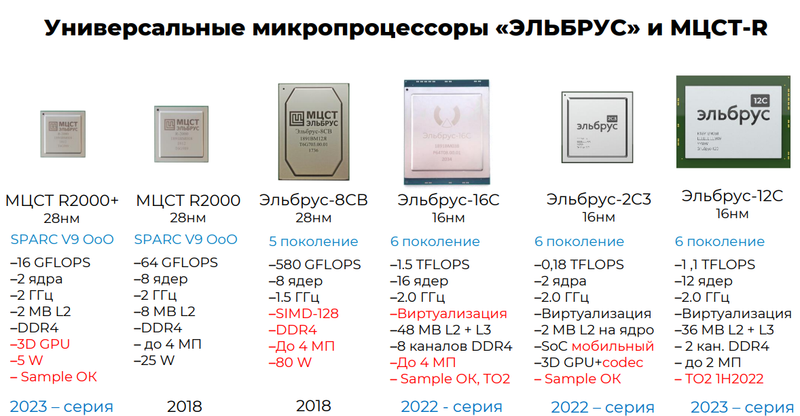
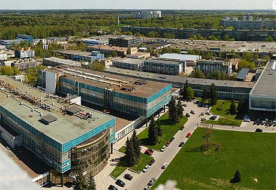

Процессоры "Эльбрус"
Эльбрусы являются полностью Российскими процессорами, работающие на Российской архитектура "Е2К".
Данный процессор позиционируется как решение для государственных структур, где требуется высокая безопасность и независимость от зерубежных технологий.
Высокая безопасность
Процессоры Эльбрус имеют защищенный режим работы процессора, что помогает избежать несанкционированный доступ к памяти, а также помогает исправить проблему переполнение стека. Помимо этого, благодаря уникальной архитектуре, многий вредоносный код просто не может исполняться. Также данный процессор не имеет многие уязвимости на архитектурном уровне, такие как Spectre и Meltdown.
VLIM архитектура
VLIW — архитектура процессоров, которая характеризуется тем, что одна инструкция процессора содержит несколько операций, которые должны выполняться параллельно.
Благодаря такому подходу обеспечивается лучшая производительность на такт, по сравнению с другими архитектурами.
Поддержка x86 инструкций
Еще на этапе проектирования Эльбрусов разработчики понимали важность поддержки ПО, написанного для архитектуры х86.
Для этого была реализована система динамической трансляции двоичных кодов х86 в код Е2К. Это снижает производительность, однако позволяет пользоваться программами, которые не сделаны под E2K.
Собственное производство
Процессоры Эльбрус производятся на Российской архитектуре, благодаря чему их можно собирать на Российском заводе полупроводников "Микрон". Кроме того, производство данных процессоров можно переносить на другие заводы, такие как TSMC и ASML.

Механизм исполнения кода архитекторы VLIW (e2k) и RISC (x86)


Полупроводниковый завод "Микрон", Зеленоград